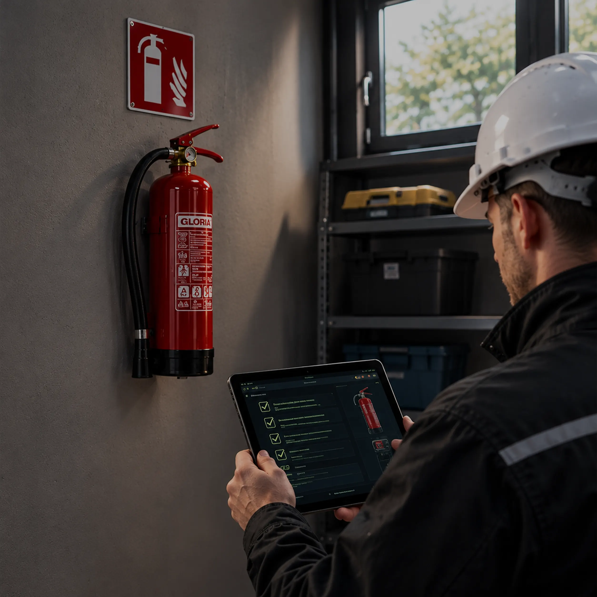

Jaký typ pořídit, kdy je povinný a jak ho správně umístit a pravidelně kontrolovat.
Přenosný hasicí přístroj v blízkosti technické místnosti slouží ke zvládnutí požáru v jeho počáteční fázi, než dorazí hasiči. Je to nejjednodušší a nejdostupnější opatření z celého seznamu — stačí ho pořídit a umístit na správné místo.
Přenosné hasicí přístroje patří mezi požárně bezpečnostní zařízení, která je potřeba kontrolovat nejméně jednou ročně.
Vyhláška č. 23/2008 Sb. ukládá vybavit přenosnými hasicími přístroji nově zkolaudované rodinné a bytové domy a garáže (účinná od 1. 7. 2008). Počet, typ a umístění přístrojů určuje projektová dokumentace stavby, u bytového domu tedy PBŘ. Zda a kde má být přístroj přímo u FVE, určí PBŘ pro instalaci.
Naše doporučení je ale mít hasicí přístroj v blízkosti technické místnosti vždy, bez ohledu na to, co říká vyhláška.
U novějších staveb nebo tam, kde proběhla rekonstrukce, bývá přístroj běžnou součástí požárně bezpečnostního řešení. I tam, kde povinnost formálně chybí, jde o opatření, které se z hlediska bezpečnosti i nákladů vyplatí bez ohledu na stáří domu.
Přístroje určené výrobcem k hašení lithiových baterií — hasiči doporučují především pěnové přístroje nebo přístroje s hasivem AVD (na vodní bázi). Před koupí ověřte u výrobce, pro jaké třídy požárů a pro jaké napětí je přístroj určen.

Informace vycházejí z vyhlášky č. 23/2008 Sb. o technických podmínkách požární ochrany staveb, vyhlášky č. 246/2001 Sb. o požární prevenci, doporučení HZS ČR a HZS krajů, doporučení České asociace pojišťoven (2024), příručky Solární asociace Protipožární bezpečnost u střešních solárních elektráren (2026) a ČSN EN 3-7.
Proč je to důležité
Hasicí přístroj umožňuje zvládnout požár v zárodku a omezit škodu do příjezdu hasičů. Přístroj stojí pár tisíc korun — škoda na bytovém domě bývá v řádu milionů. Požadavky pojišťovny je vhodné ověřit předem.
Nenašli jste odpověď na svou otázku na této stránce?
Zkuste vyhledat dané téma na webu.